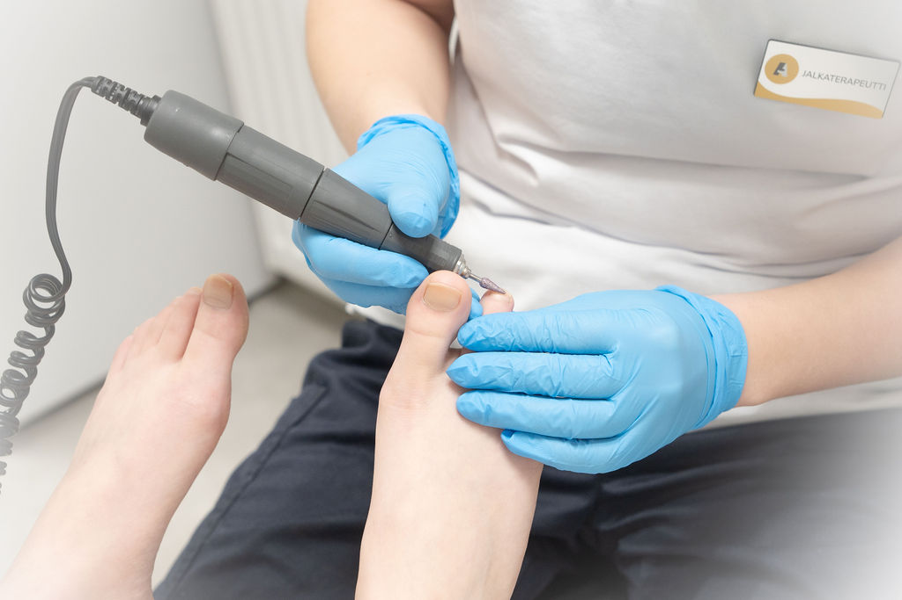
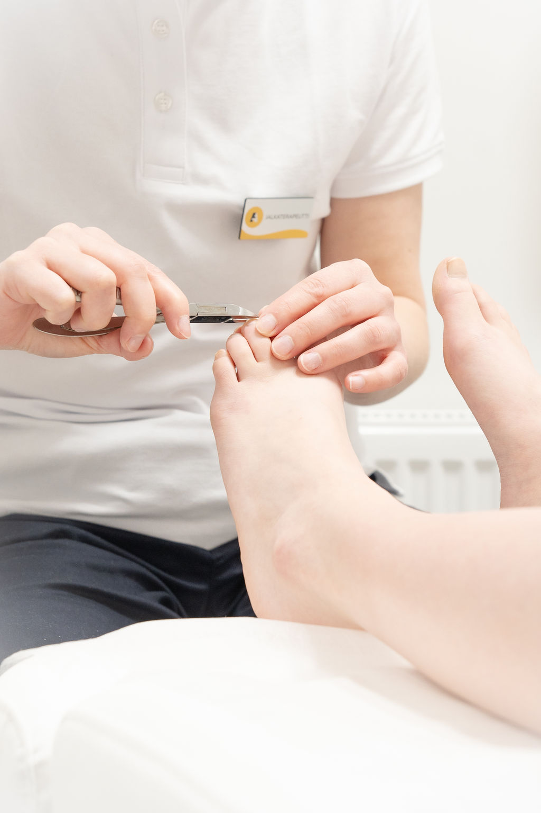
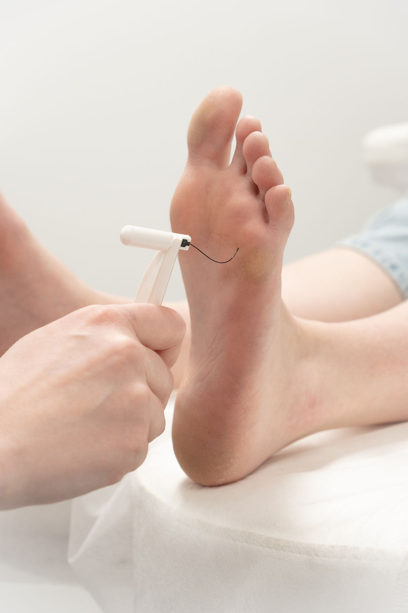
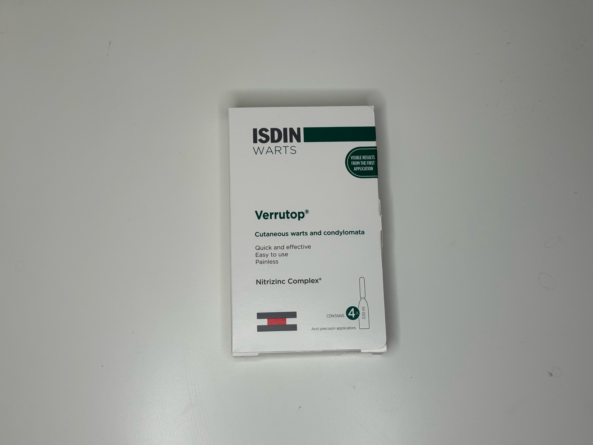
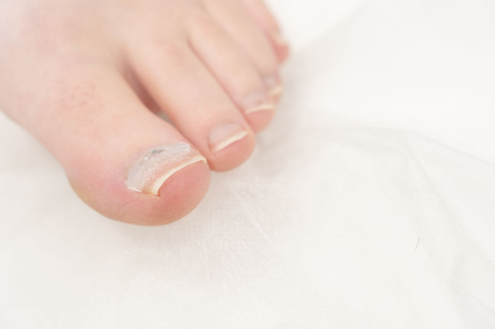
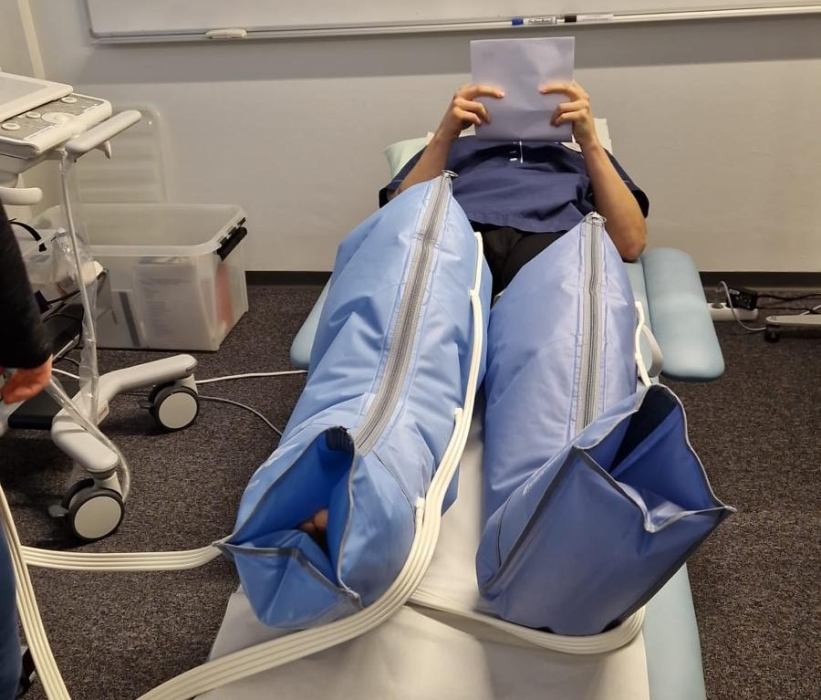
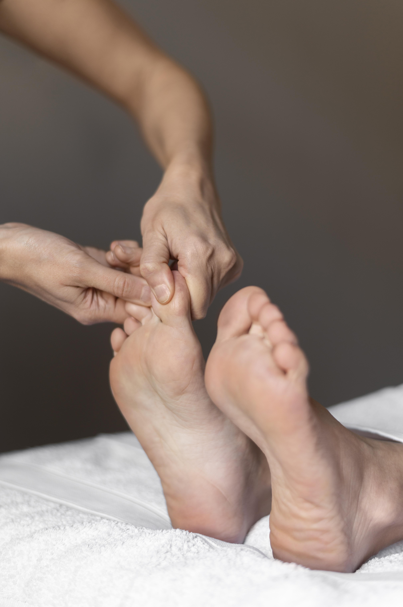
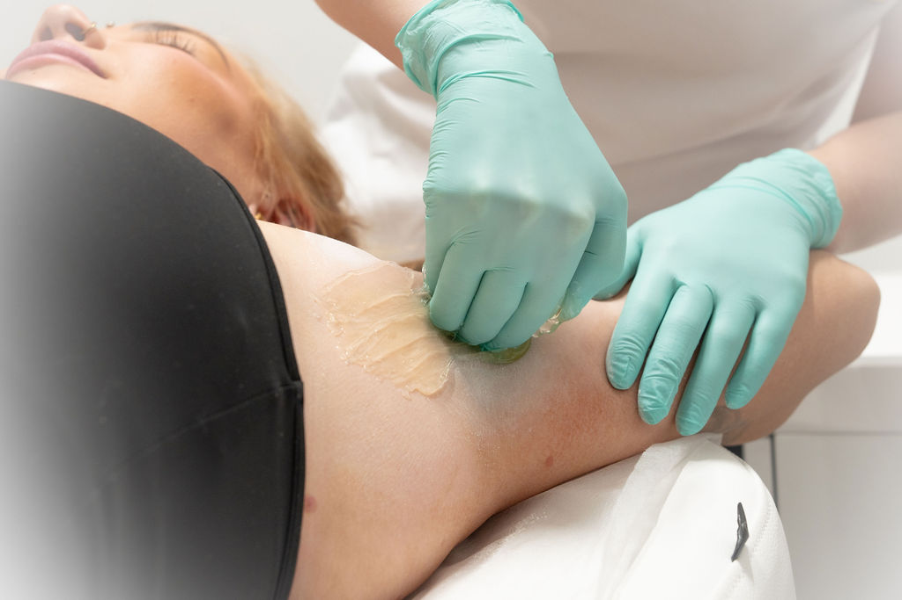

Palvelut
Tarjoan laajan valikoiman jalkaterveyspalveluita pitääkseni sinut liikkeessä.

Jalkahoito
Kliininen jalkaterapia on yleisin tarjoamamme palvelu ja se toteutetaan aina yksilöllisesti asiakkaan tarpeiden mukaan. Hoito soveltuu kaikenlaisille jaloille ja perustuu terveydenhuollon suosituksiin. Hoito sisältää jalkojen ja ihon kunnon tarkistuksen, kynsien lyhennyksen ja tarvittaessa ohennuksen, kovettumien ja känsien poiston ja jalkojen rasvauksen. Jos hoidossa havaitaan muita hoidettavia ongelmakohtia, ne käsitellään osana kokonaisvaltaista hoitoa.
Hinta: 84 €
Ajanvaraus: 90 min

Kynsien lyhennys
Kynsien lyhennys on tarkoitettu sinulle, kun kynnet kaipaavat ammattimaista ja turvallista hoitoa. Vastaanotolla tarkastamme kynsien ja ympäröivän ihon kunnon sekä huomioimme mahdolliset perussairaudet. Kynnet lyhennetään huolellisesti ja tarvittaessa ohennetaan. Hoito toteutetaan terveydenhuollon suositusten mukaisesti. Kynsien lyhennys auttaa ehkäisemään kynsiongelmia, kuten sisäänkasvaneita kynsiä, kipua ja tulehduksia. Palvelu sopii myös säännölliseksi ylläpitohoidoksi.
Hinta: 48 €
Ajanvaraus: 45 min

Jalkaterapia
Jalkaterapian tavoitteena on antaa sinulle kattavaa tietoa jalkojesi toiminnasta ja rakenteista sekä kartoittaa mahdollisia puolieroja tai lihasepätasapainoja. Vastaanotollemme tullaan usein esimerkiksi vaivasenluun (hallux valgus) tai plantaarifaskiitin aiheuttamien kipujen vuoksi. Arviointikäynnillä tutkimme jalkaterien nivelliikkuvuudet, jalan kaarirakenteet ja linjaukset sekä mahdolliset puolierot ja toiminnalliset poikkeamat.
Hinta: 56 €
Ajanvaraus: 60 min

Syylän hoito
Syylien hoito toteutetaan vastaanotollamme Verrutop-hoitomenetelmällä. Vastaanotolla käymme hoidon kulun huolellisesti läpi yhdessä asiakkaan kanssa. Syylän hoito perustuu syyläkudoksen päällä olevan kovettuneen ihon poistoon, jotta hoitava aine pääsee vaikuttamaan itse syylään. Hoito voidaan aloittaa jo ensimmäisellä vastaanottokäynnillä.
Hinta: 53 € + käytetty aika
Ajanvaraus: 45 min

Podofix-kynnenoikaisu
Podofix-kynnenoikaisu on yksi käytetyimmistä ja luotettavimmista hoitomenetelmistä sisäänkasvaneiden ja taipuneiden kynsien hoidossa. Podofix-menetelmä soveltuu lähes kaikille epämuodostuneille kynsille, kuten sisäänkasvaneille ja voimakkaasti kaartuville kynsille.
Hinta: 58 € + käytetty aika
Ajanvaraus: 45min

Lympha Press -kompressiohoito
Lympha Press -kompressiohoito, jota voidaan käyttää tukena mm. sekundaarisen lymfaödeeman, lipödeeman, laskimoperäisen turvotuksen, suonikohjujen, säärihaavojen, urheiluvammojen ja palautumisen tukena.
Hinta: 48 €
Ajanvaraus: 30 minuuttia

Silikoniortoosi
Silikoniortoosi valmistetaan aina yksilöllisesti vastaanotolla. Se on varpaita keventävä, korjaava ja suojaava tuki, jonka avulla ohjataan varpaiden asentoa oikeaan suuntaan. Ortoosi on pitkäikäinen, joustava ja pestävä, joten se soveltuu hyvin päivittäiseen käyttöön.
Hinta: 32 € / kpl + käytetty aika
Ajanvaraus: 45min

Puolihieronta
Puolihieronta on tehokas ja rentouttava hoito, jonka aikana käsitellään valitsemasi kehonosat. Hoito sopii erityisesti lihasjännitysten, kiputilojen ja kuormituksen lievittämiseen sekä palautumisen tueksi. Hieronnassa voidaan käsitellä esimerkiksi ylävartalo: niska, hartiat, selkä ja käsivarret tai alavartalo: alaselkä, pakarat ja alaraajat.
Hinta: 39 €
Ajanvaraus: 60 min

Kokohieronta 90 min
Kokohieronta on kokonaisvaltainen ja rentouttava hoito, jossa käydään läpi koko kehon lihaksisto. Hoito sopii erityisesti lihasjännitysten, kiputilojen ja kuormituksen lievittämiseen sekä yleisen hyvinvoinnin ja palautumisen tukemiseen. Kokemus on samalla kokonaisvaltainen ja hyvin rentouttava.
Hinta: 57 €
Ajanvaraus: 90 min
Kokohieronta 120 min
120 minuutin kokohieronta on kokonaisvaltainen ja syvempi hoito, jossa käsitellään koko kehon lihaksisto perusteellisesti. Hoito sopii erityisesti lihasjännitysten ja kiputilojen lievittämiseen, kuormituksen palautumiseen sekä kokonaisvaltaisen rentoutumisen tukemiseen.
Hinta: 78 €
Ajanvaraus: 120 min

Kainaloiden sokerointi (harjoittelija)
Sokerointi poistaa karvat hellävaraisesti, jättäen ihon sileäksi ja pehmeäksi viikoiksi. Samalla iho kuoriutuu kevyesti, mikä tekee siitä ihanteellisen vaihtoehdon myös herkälle iholle. Palvelun hinta ja kesto vaihtelevat sokeroitavan alueen mukaan. Vaihtoehtoina ovat kainaloiden, säärien ja reisien sokerointi.
Hinta: 19 €
Ajanvaraus: 30 minuuttia

Säärien sokerointi (harjoittelija)
Sokerointi poistaa karvat hellävaraisesti, jättäen ihon sileäksi ja pehmeäksi viikoiksi. Samalla iho kuoriutuu kevyesti, mikä tekee siitä ihanteellisen vaihtoehdon myös herkälle iholle. Palvelun hinta ja kesto vaihtelevat sokeroitavan alueen mukaan. Vaihtoehtoina ovat kainaloiden, säärien ja reisien sokerointi.
Hinta: 29 €
Ajanvaraus: 60 minuuttia

Yksilölliset palapohjalliset
Yksilöllisellä palapohjallisella pyritään ohjaamaan ja tasaamaan jalkaterään kohdistuvaa kuormitusta ja painetta koko jalkaterän alueelle. Pohjallisen tarkoituksena on auttaa jalkaterää pysymään oikeassa asennossa.
Hinta: 160 -180 €
Ajanvaraus: Sovitaan tilattaessa

Lahjakortti
Jalkaterapia, hieronta tai sokerointi. Valitse lahjakorttiin juuri se hoito, jonka tiedät ilahduttavan. Täydellinen tapa muistaa ystävää, läheistä tai itseäsi!
Hinta: Avoin
Ajanvaraus: palvelusta riippuen